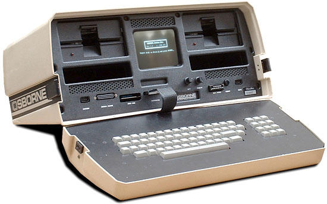

[10th_law__purpose]
back to top...
You can't miss fast enough to win a gunfight.
Being busy does not always mean real work. The object of all work is production or accomplishment and to either of these ends there must be forethought, system, planning, intelligence, and honest purpose, as well as perspiration. Seeming to do is not doing. Thomas A. Edison.
Why is there never enough time to do it right, but always enough time to do it over? Not being familiar with a technology isn't an excuse for misusing it. The Tacoma Narrows bridge is taken as the first example of aeroelastic flutter and little thought is given to the design errors. But the bridge was nicknamed "Galloping Gertie" during construction by workers. It was clearly know that the bridge exhibited unpredicted behaviour, but the construction went on.
The 1940 Tacoma Narrows Bridge, the first Tacoma Narrows Bridge, was a suspension bridge in the U.S. state of Washington that spanned the Tacoma Narrowsstrait of Puget Sound between Tacoma and the Kitsap Peninsula. It opened to traffic on July 1, 1940, and dramatically collapsed into Puget Sound on November 7 of the same year. At the time of its construction (and its destruction), the bridge was the third longest suspension bridge in the world in terms of main span length, behind the Golden Gate Bridge and the George Washington Bridge.
Construction on the bridge began in September 1938. From the time the deck was built, it began to move vertically in windy conditions, which led to construction workers giving the bridge the nickname Galloping Gertie. The motion was observed even when the bridge opened to the public. Several measures aimed at stopping the motion were ineffective, and the bridge's main span finally collapsed under 40-mile-per-hour (64 km/h) wind conditions the morning of November 7, 1940.
Following the collapse, the United States' involvement in World War II delayed plans to replace the bridge. The portions of the bridge still standing after the collapse, including the towers and cables, were dismantled and sold as scrap metal. Nearly 10 years after the bridge collapsed, a new Tacoma Narrows Bridge opened in the same location, using the original bridge's tower pedestals and cable anchorages. The portion of the bridge that fell into the water now serves as an artificial reef.
The bridge's collapse had a lasting effect on science and engineering. In many physics textbooks, the event is presented as an example of elementary forcedresonance with the wind providing an external periodic frequency that matched the bridge's natural structural frequency, though the actual cause of failure wasaeroelastic flutter.[1] Its failure also boosted research in the field of bridge aerodynamics-aeroelastics, the study of which has influenced the designs of all the world's great long-span bridges built since 1940
Slow is smooth, smooth is fast. Navy SEALS.
You only get one opportunity to get it right the first time.
Probabilistic risk assessment (PRA) is a systematic and comprehensive methodology to evaluation of risks associated with a complex engineered technological entity (such as an airliner or a nuclear power plant).
Risk in a PRA is defined as a feasible detrimental outcome of an activity or action. In a PRA, risk is characterized by two quantities:
- The magnitude (severity) of the possible adverse consequence(s), and,
- The likelihood (probability) of occurrence of each consequence.
If you don't take the time to evaluate your decisions and to consciously strive to do a good job, entropy will beat you mercilessly into banality.
When a person states that he is one hundred percent sure of something, you can be certain that they are wrong at least three fourths of the time. The blindness of arrogance is more complete than any other. When someone states that something has 'always been done this way', you can be certain that you will be able to find at least a dozen more efficient and more effective ways to accomplish the same task.
Entropy is a harsh mistress.
|
|
As a Product Engineer at STEMCO in the early 1980's, I was responsible for investigating the phenomena of "popped screws". The hubcap ring that contained a compressed gasket was retained by 5/8" phillips head thread cutting screws. These had been designed when the hubcap body was drilled for the screw pockets. Since that time the die caster had begun using tapered pins to create the pockets. The material next to the pins cooled faster than the surrounding material and created a skin like jello does on the surface.
The screws now had to cute thicker material in a tapered hole rather than softer material in a straight sided hole. The automated screw driver machines dealt with the extra force required by increasing down pressure on the phillips head, increasing stress even more. Tolerances in the cap body and ring caused slight variations in the hole circles of each, and tapered seats in the ring caused the screw heads to line up with the ring, while the screw shaft was forced into the slightly different screw circle in the cap body. The result was that each screw was put in place slightly bent and under huge pressure. A huge number of hubcaps were returned after they were unboxed in the field to find one or more of the screws had broken, "popping" the the head off the screw due to the stresses, vibration in shipping, and cumulative damage.
I changed the screw design to a half inch thread rolling screw with a torx head design that requires zero down pressure. Although this was criticized heavily due to the relative obscurity of the torx drivers, the incidence of popped screws went to almost zero. Further, the torx driver bit was the same size that was used to adjust GM headlights, and was available at virtually every auto parts store and even many convenience stores. I had to fight an uphill battle to make this happen because people who had been in place for years didn't realize that the changing environment required changing plans. Every time a minor change was made in the design they had a new opportunity to "do it right the first time".
|
|

The company sold 11,000 Osborne 1s in the eight months following its July 1981 debut, with 50,000 more on backorder, although the early units had a 10 to 15% failure rate. The peak sales per month for it over the course of the product lifetime was 10,000 units, despite the initial business plan for the computer predicting a total of only 10,000 units sold over the entire product lifecycle. Osborne had difficulty meeting demand, and the company grew from two employees, Osborne and Felsenstein, to 3,000 people and $73 million in revenue in 12 months. The growth was so rapid that, in one case, an executive who returned from a one-week trade show had to search two buildings to find her relocated staff. The company announced in October 1982 a temporary bundling of Ashton-Tate's dBase II, increasing demand so much that production reached 500 units a day and severely diminishing quality control.
Dvorak confirms the story, and thinks that people are really getting their micro pioneers mixed up. Think North Star, he says
The pre-announcement myth used in the desktop computer business stems from the late 1970's. It came from within the microcomputer industry which was unprofessionally run and where everything was played by ear as entrepreneurs made up their own rules and axioms as they went along.
|
|
I remember hearing of the Challenger Disaster. As a young Product Engineer I was actually working on a design for a hub oil seal at the time for Stemco, a division of Colt Industries. When it became known that the failure was precipitated by a failure in the design of an o-ring, I remember pulling my o-ring design manual down from my bookshelf to verify that I wasn't remembering incorrectly. I wasn't. There in clear words and diagrams were simple instructions on how to design a cavity for an o-ring.
Hardy told Thiokol, "I am appalled. I am appalled by your recommendation." Mulloy said, "My God, Thiokol, when do you want me to launch, next April?"
Engineers at the Marshall Space Flight Center wrote to the manager of the Solid Rocket Booster project, George Hardy, on several occasions suggesting that Thiokol's field joint design was unacceptable. For example, one engineer suggested that joint rotation would render the secondary O-ring useless, but Hardy did not forward these memos to Thiokol, and the field joints were accepted for flight in 1980.
The Challenger disaster could have been avoided by a desire to do a good job, rather than an acceptance of doing a bad job delivered on time. History is replete with examples of failures due to attempts to rush to be the first, to meet an arbitrary schedule, or simply due to the arrogance of believing that the responsible parties cannot be wrong.
|
|
Military analogies used in a business environment are typically just wrong. Military operations change dynamically at the tactical level based on a sound strategy. This is not always the case though.
The lessons learned range from the tactical to the grand strategic. The following covers some of the main points, but is by no means a complete list:
Expecting a two-hour daylight mission, the Rangers ignored Murphy's Law, "Anything that can go wrong will go wrong." Leaving behind night vision devices (NVD's), body armor and even water, they opted to carry extra ammunition. This decision proved fatal to many.
The immediate Chain of Command ignored the basic military dictum that no plan survives first contact with the enemy. Only one search-and-rescue unit was immediately available. When fierce resistance and heavy casualties forced the ground convoy to turn back, and the second Black Hawk fell, near-fatal delays ensued while JSOTF frantically coordinated with UN elements to organize the relief element.
Major criticism falls on the Clinton administration for reducing the number of forces allocated to the UN mission, not informing the military of its diplomatic initiatives, the dual chain of command and, of course, for not providing at least Bradley Armored Fighting Vehicles (AFV's) as requested. With proper armored support the ground convoy could have fought its way through on the first attempt saving many lives.
|
|